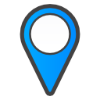
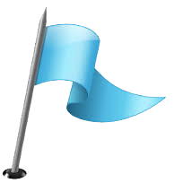

<!DOCTYPE HTML>
<html>
<head>
<meta http-equiv="Content-Type" content="text/html; charset=utf-8">
<title>Google Maps</title>
<link rel="stylesheet" href="css/style.css" type="text/css">
<!--Deploy Script For Google Maps API-->
 <script type="text/javascript"
      src="https://maps.googleapis.com/maps/api/js?key=YOUR_OWN_API_KEY&sensor=true">
    </script>
<!--API Deployment Script Ends Here-->
<!-- deploy this script AFTER the maps api-->

    <script src="scripts/google-maps-3-vs-1-0.js" type="text/javascript"></script>
    <!--Deployments Ends-->
    <script type="text/javascript" src="javascript/mainJavaScript.js"></script>
    <script type="text/javascript">
        function myfunction(cc) {

            var locations = cc;
            for (i = 0; i < locations.length; i++) {
                var map = new google.maps.Map(document.getElementById('map_canvas'), {
                    zoom: 14,

                    center: new google.maps.LatLng(locations[i][1], locations[i][2]),
                    mapTypeId: google.maps.MapTypeId.ROADMAP
                });
            }
            var infowindow = new google.maps.InfoWindow();

            var marker, i;

            for (i = 0; i < locations.length; i++) {
                marker = new google.maps.Marker({
                    position: new google.maps.LatLng(locations[i][1], locations[i][2]),
                    map: map
                });

                google.maps.event.addListener(marker, 'click', (function (marker, i) {
                    return function () {
                        infowindow.setContent(locations[i][0]);
                        infowindow.open(map, marker);
                    }
                })(marker, i));
            }
        }
       
    </script>
<script src="javascript/style_script.js" type="text/javascript"></script>
</head>

<body onLoad="initialize()">
<div class="main">
<header>
<div id="search_cnt">

<center>
<table id="tab">
<tr>
<th><input type="text" class="text_box" value="Enter Place To Search" id="search" onBlur="onblur_js()" onFocus="onfocus_js();" /></th>
<th><input type="button" class="btn_box" onClick="initialize()"  value="Search"/></th>
</tr>
</table>
</center>
</div>
</header>
<aside id="cnt1">
<div>
<center>
<p><label title="Directions" class="label_font">Directions</label></p>
<table style="margin-top:30px;">
<tr>
<td></td>
<td>
<input type="text" class="text_box" value="Choose start point" onBlur="st_blur_js()" onFocus="st_focus_js()" id="first_location"/>
</td>
</tr>
<tr>
<td></td>
<td>
<input type="text" class="text_box" value="Choose end Point" onBlur="en_blur_js()" onFocus="en_focus_js()" id="second_location"/>
</td>
</tr>
<tr>
<th colspan="2">
<select id="dirtype" class="drop_list" style="font-family:'Comic Sans MS', cursive">
<option value="1">Driving</option>
<option value="2">Walking</option>
<option value="3">Transit</option>
</select>
</th>
</tr>
<tr>
<th colspan="2"><input type="button" class="btn_box" value="Find Direction" id="getDirection" onClick="calcRoute()"/></th>
</tr>
</table>
</center>
</div>
<div  style="overflow:auto; max-height:250px">
   <div id="directionsPanel"></div>
   </div>
</aside>

<aside id="cnt2">
<!--To print map-->
<div id="map_canvas" style="height:100%;"></div>
</aside>
<footer>
<br/>
<center>
&copy; Designed By Paras Babbar. All Right Reserved: Google Custom Maps.
</center>
</footer>
</div>

</body>
</html>
